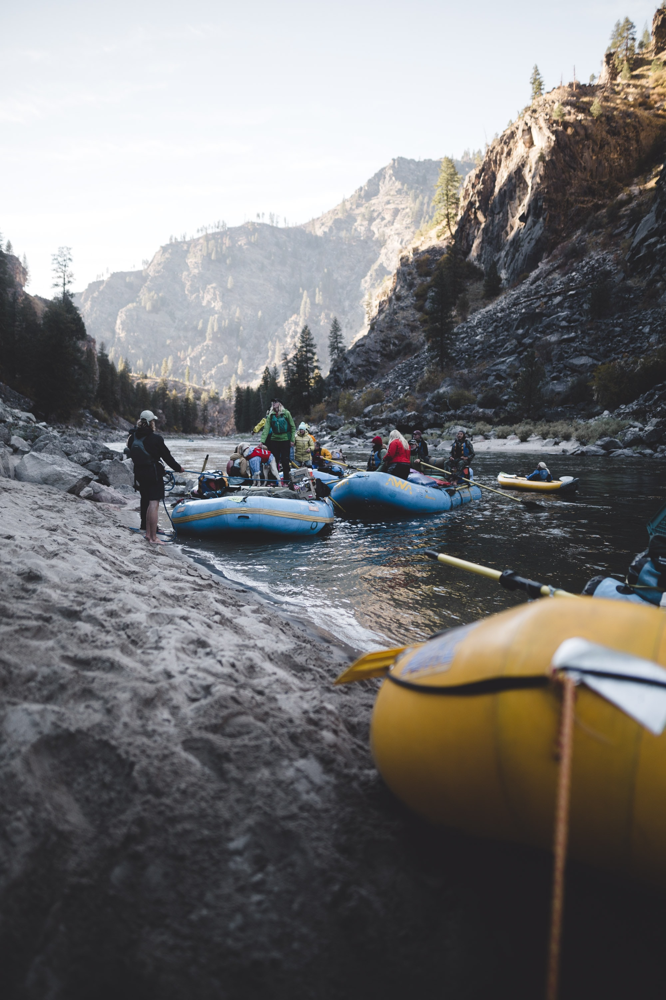
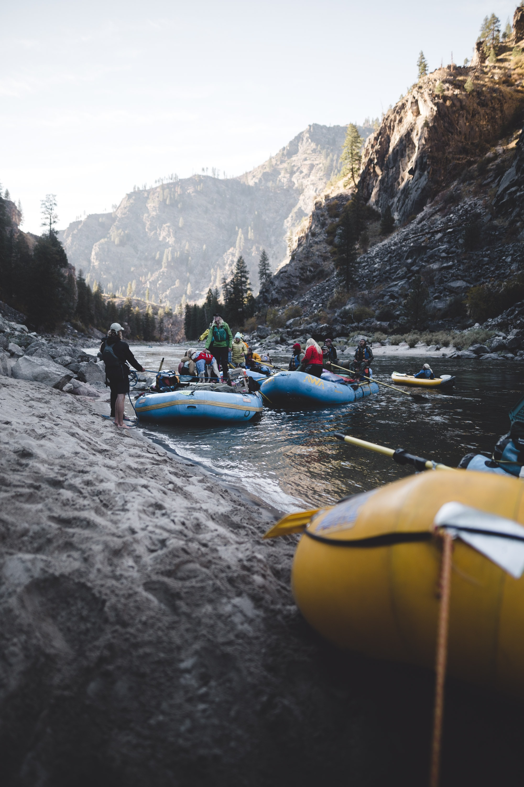

Adventure Experiences
 


"I would DEFINITELY recommend going with this company. The people and the guides were great. They were knowledgeable, funny, and experienced. Ethan was great and helped our group be comfortable in rowing and even getting in the water. I loved the rapids. We rented the wet suits, which I would recommend. The water was cool, but the sun shining down helped. Maybe long sleeves would have helped or even a raincoat over it, maybe. I would definitely do it again. We traveled in level 2-3 water--3-4 might be our next choice. Our eleven-year-old son loved it. He can't wait to go again. Bring a towel to change for the way home, however." -Lindsey
"Even though it was 45° outside in August when we went, we had a blast! The crew members both at the store and on the water were fantastic and hilarious. Kalie was our river guide and she really made the trip a great time. There is a public parking area where you will park, but it can fill up so I suggest giving yourself enough time to find a spot. Luckily, we were the 9:45am group so we did not have a problem but later in the afternoon you would. They had heated buses so when you come out of the water, you will stay warm once you walk up the hill to the bus. If it is cold or rainy, no worries—wet suit and bootie rentals are cheap and definitely worth getting. They also had rain covers (like rain jackets) if you wanted more coverage. I would suggest bringing a good rain jacket if those are the conditions when you come, but rain or shine, cold or hot, you’ll have a great time." -Jack
"We scheduled the scenic/whitewater combo for the day. For the 13 mile scenic float in the morning we had Jake as our guide, he was fun to talk with and very knowledgeable about the scenery and the wildlife that we would see along the way which included bald eagles, osprey, ducks and the highlight of the float, a bull moose, feeding just 30 yards from us. After the float we returned to the office where they provided us with a nice lunch and a short break before being sized for our wetsuits. For the whitewater trip we opted for the small boat slam, which provides for a more exciting ride. We had 6 people, plus our guide Skyler who was very informative about the do's and don'ts of whitewater rafting. He was a great guide and made the trip enjoyable and safe for our entire group, and also explained the history of the section of river that we were floating that day." -Pearson
"Such a fun adventure with our teenage boys! We went in August and the waters were running perfectly...so many different kinds of rapids and they can't stop talking about how fun it was to "ride the bull"! Easy checkin and clear communication, we'd definitely go through Teton Whitewater again...and the combo package with the scenic float after whitewater was a perfect way to relax after our adventures. Highly recommend and Brad and Kenton were great guides!" -Todd